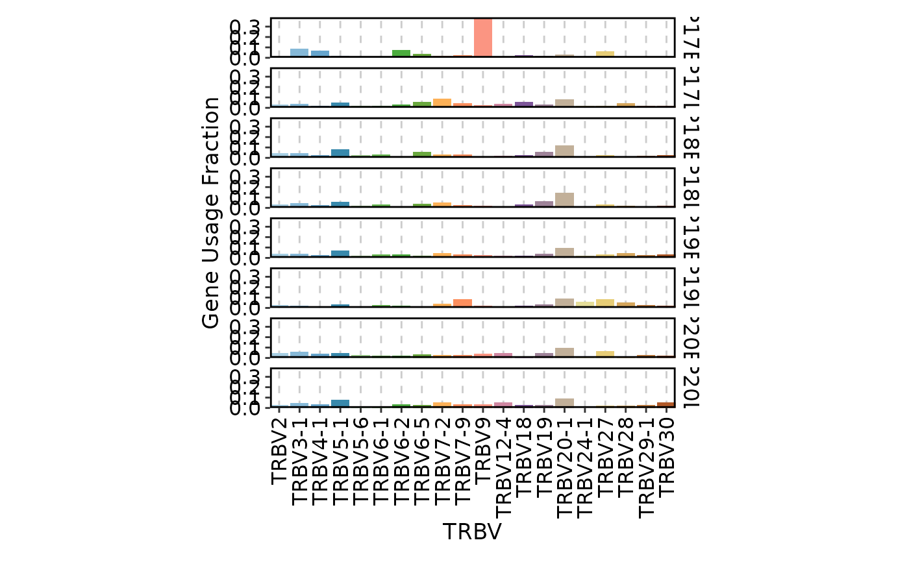
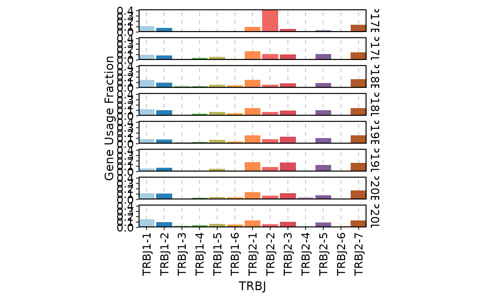
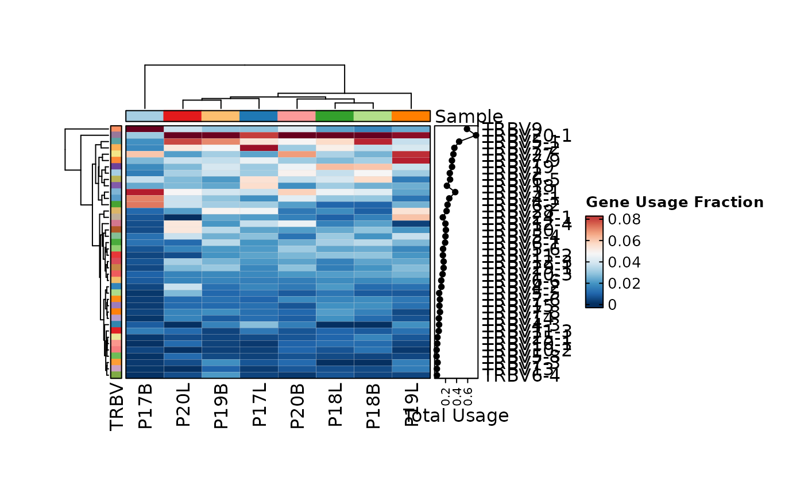
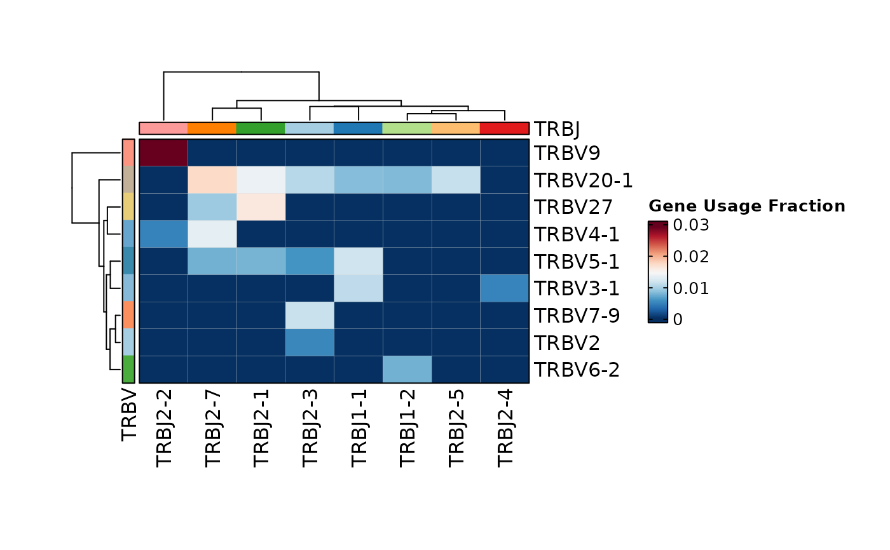
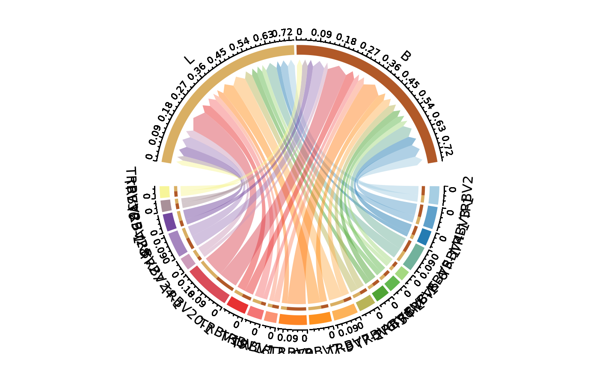
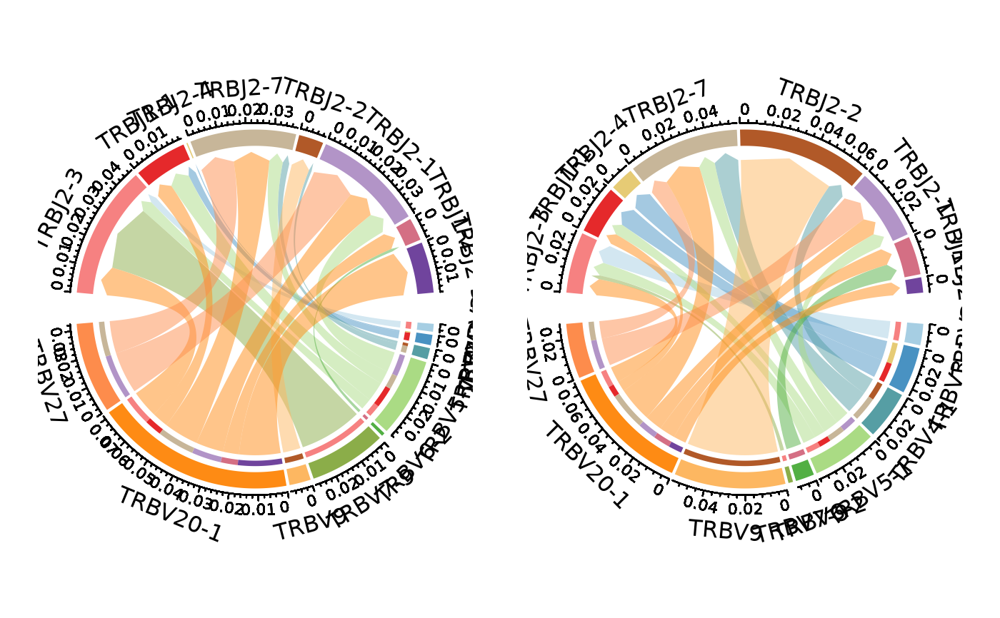
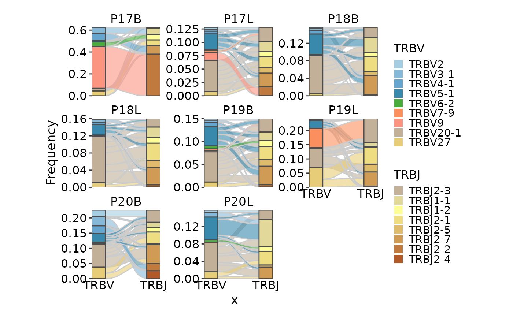

ClonalGeneUsagePlot
Usage
ClonalGeneUsagePlot(
data,
genes = "TRBV",
scale = TRUE,
top = 20,
plot_type = c("bar", "heatmap", "circos", "chord", "alluvial", "sankey"),
group_by = "Sample",
facet_by = NULL,
facet_ncol = 1,
split_by = NULL,
aspect.ratio = 2/top,
theme_args = list(),
ylab = NULL,
row_annotation = NULL,
row_annotation_type = list(),
row_annotation_side = "right",
row_annotation_agg = list(),
...
)Arguments
- data
The product of scRepertoire::combineTCR, scRepertoire::combineTCR, or scRepertoire::combineExpression.
- genes
The prefix of genes to be plotted. Default is "TRBV". If two sets of genes are provided (e.g. c("TRBV", "TRBJ")), the second dimension will be the second set of genes instead of the group_by variable.
- scale
Whether to use the proportion that is scaled to the group or the count.
- top
The number of top genes/genepairs to be plotted.
- plot_type
The type of plot to be generated. Default is "bar". Options are "bar", "heatmap", "circos" (aka "chord").
- group_by
The variable to group the data by. Default is "Sample".
- facet_by
A character vector of column names to facet the plots. Default is NULL. Should not be specified manually.
- facet_ncol
The number of columns in the facet grid. Default is 1.
- split_by
A character vector of column names to split the plots. Default is NULL.
- aspect.ratio
The aspect ratio of the plot. Only available for "bar" plot. Default is 2/top.
- theme_args
A list of arguments to be passed to the ggplot2::theme function.
- ylab
The y-axis label. Default is NULL.
- row_annotation
A list of row annotations to be added to the heatmap. Default is NULL.
- row_annotation_type
A list of row annotation types.
- row_annotation_side
The side of the row annotation. Default is "right".
- row_annotation_agg
A list of row annotation aggregation functions.
- ...
Other arguments passed to the specific plot function.
For "bar", plotthis::BarPlot
For "heatmap", plotthis::Heatmap
For "circos", plotthis::ChordPlot
For "chord", plotthis::ChordPlot
Examples
set.seed(8525)
data(contig_list, package = "scRepertoire")
data <- scRepertoire::combineTCR(contig_list,
samples = c("P17B", "P17L", "P18B", "P18L", "P19B","P19L", "P20B", "P20L"))
data <- scRepertoire::addVariable(data,
variable.name = "Type",
variables = rep(c("B", "L"), 4)
)
data <- scRepertoire::addVariable(data,
variable.name = "Subject",
variables = rep(c("P17", "P18", "P19", "P20"), each = 2)
)
ClonalGeneUsagePlot(data)

ClonalGeneUsagePlot(data, genes = "TRBJ", genes2 = "TRBV")

ClonalGeneUsagePlot(data, top = 40, plot_type = "heatmap")

ClonalGeneUsagePlot(data, genes = c("TRBV", "TRBJ"), plot_type = "heatmap")

ClonalGeneUsagePlot(data, genes = "TRBV", group_by = "Type", plot_type = "chord")

ClonalGeneUsagePlot(data, genes = c("TRBV", "TRBJ"), group_by = "Type", plot_type = "chord")

ClonalGeneUsagePlot(data, genes = c("TRBV", "TRBJ"), plot_type = "alluvial")
